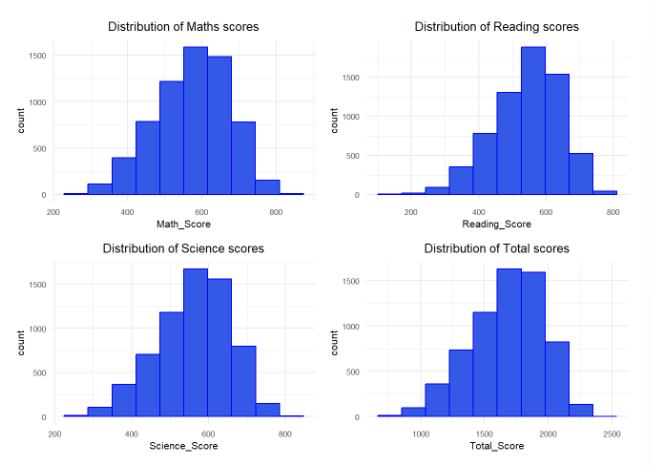
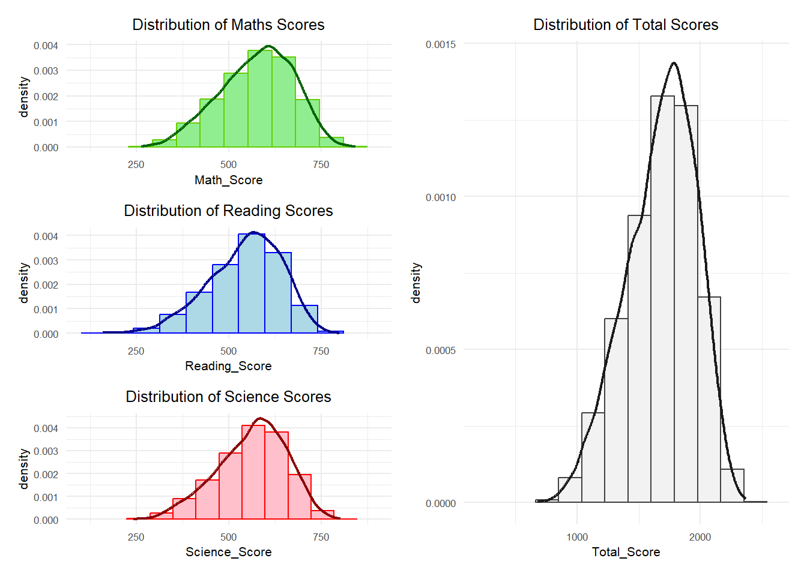
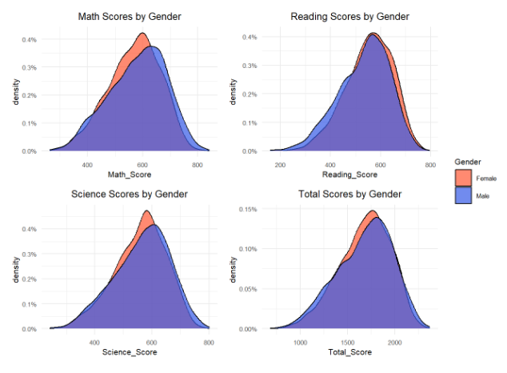
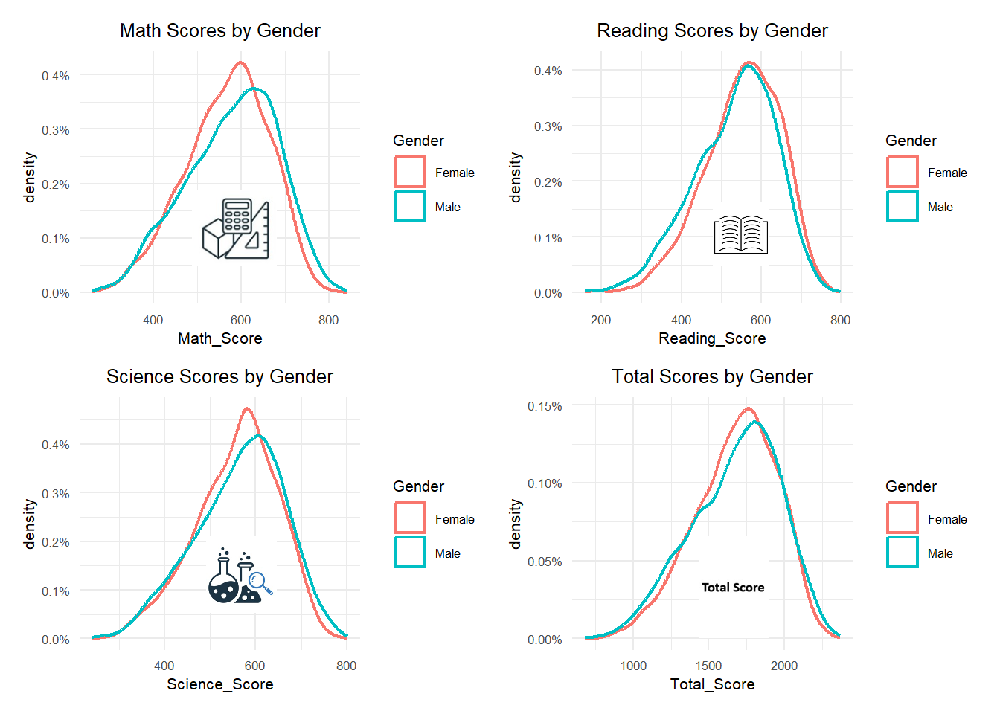
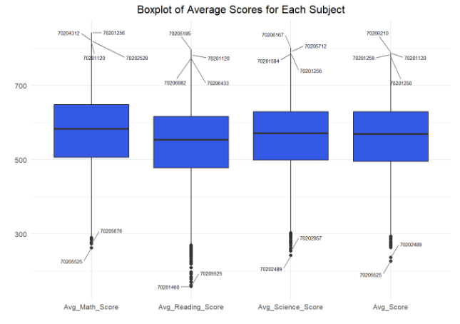
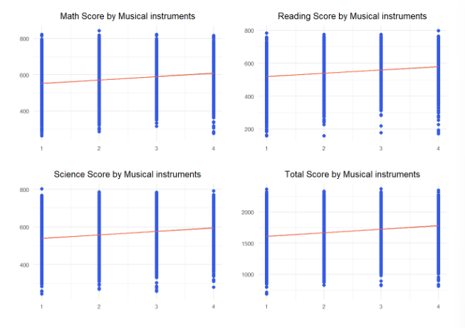
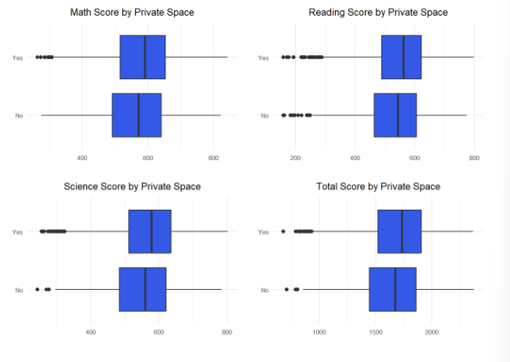

pacman::p_load(tidyverse, haven, dplyr, plotly, ggrepel, patchwork,
ggthemes, hrbrthemes, jpeg)Data Vis Makeover
1. Setting the Scene
1.1 Background
This is the take home exercise 2 of ISSS608 Visual Analytics and Applications. In this exercise, we are instructed to refer to the take home exercise 1 of one of our fellow classmates, and discuss his / her visualizations in terms of clarity and aesthetics.
1.2 Choose the reference work
The discussions in this take home exercise is based on this work.
2. Data Preparation
2.1 Installing and loading the required libraries
The chunk below is used to install and load the R packages that were used by the original author.
2.2 Import the data
The data used for our take home exercise 1 is a survey data from PISA, which measures 15-year-olds’ ability to use their reading, mathematics and science knowledge and skills to meet real-life challenges. If you’d like to find out more about the dataset, you may refer to my take home exercise 1.
Let’s first import the dataset.
stu_qqq_sg <- read_rds("../../Data/stu_qqq_sg.rds")Next, we’ll follow the code provided by the original author to make a subset of the data, and compute the average plausible values for mathematics, reading and science.
# Create a new dataset PV by extracting relevant variables from stu_qqq_sg
PV <- stu_qqq_sg %>%
mutate(
Math_Score = rowMeans(select(., starts_with("PV1MATH"), starts_with("PV2MATH"), starts_with("PV3MATH"), starts_with("PV4MATH"), starts_with("PV5MATH"), starts_with("PV6MATH"), starts_with("PV7MATH"), starts_with("PV8MATH"), starts_with("PV9MATH"), starts_with("PV10MATH")), na.rm = TRUE),
Reading_Score = rowMeans(select(., starts_with("PV1READ"), starts_with("PV2READ"), starts_with("PV3READ"), starts_with("PV4READ"), starts_with("PV5READ"), starts_with("PV6READ"), starts_with("PV7READ"), starts_with("PV8READ"), starts_with("PV9READ"), starts_with("PV10READ")), na.rm = TRUE),
Science_Score = rowMeans(select(., starts_with("PV1SCIE"), starts_with("PV2SCIE"), starts_with("PV3SCIE"), starts_with("PV4SCIE"), starts_with("PV5SCIE"), starts_with("PV6SCIE"), starts_with("PV7SCIE"), starts_with("PV8SCIE"), starts_with("PV9SCIE"), starts_with("PV10SCIE")), na.rm = TRUE),
Total_Score = Math_Score + Reading_Score + Science_Score,
Gender = ifelse(ST004D01T == 1, "Female", "Male"),
Own_Room = ifelse(ST250Q01JA == 1, "Yes" , "No"),
mi_num = ST251Q06JA
) %>%
select(CNTSCHID, CNTSTUID, Math_Score, Reading_Score, Science_Score, Total_Score, Gender, Own_Room, mi_num)As described by the original author, we use the code chunk below to convert school ID and student ID to string variables. We’ll also clear the missing values in the new dataset.
# Convert numerical variables to string variables
PV$CNTSCHID <- as.character(PV$CNTSCHID)
PV$CNTSCHID <- as.character(PV$CNTSTUID)
# Clear missing values
PV <- na.omit(PV)3. Visualization Discussion and Remake
3.1 Distribution of Student Performance
Original plot

What’s good about this plot?
The original author chose the right type of graph to view the distribution of the subjects, which is the histograms. It is easy for us to see if the data exhibits any abnormal patterns, for example, skewness or multi-model distribution.
What can be improved?
It isn’t very obvious to identify the plots for each subject as they are all in the same color. My suggestion is to use different colors to represent different subjects.
The scales could be aligned across all the charts so to avoid mis-interpretation when comparing the mean scores among the three subjects.
Density curves could be added to show the smoothness of the curves.
The plots could be better arranged to show the relationship among individual subjects and the total scores.
A remake of the plot

plot1 <- ggplot(data = PV, aes(x = Math_Score, y = after_stat(density))) +
geom_histogram(bins = 10, boundary = 100, color = "chartreuse3", fill = "lightgreen") +
geom_density(lwd = 0.8, colour = "darkgreen") +
scale_y_continuous(labels = scales::percent) +
coord_cartesian(xlim = c(100, 900)) +
ggtitle("Distribution of Maths Scores")+
theme_minimal() +
theme(text = element_text(size = 8),
plot.title = element_text(hjust = 0.5))
plot2 <- ggplot(data = PV, aes(x = Reading_Score, y = after_stat(density))) +
geom_histogram(bins = 10, boundary = 100, color = "blue", fill = "lightblue") +
geom_density(lwd = 0.8, colour = "darkblue") +
scale_y_continuous(labels = scales::percent) +
coord_cartesian(xlim = c(100, 900)) +
ggtitle("Distribution of Reading Scores")+
theme_minimal() +
theme(text = element_text(size = 8),
plot.title = element_text(hjust = 0.5))
plot3 <- ggplot(data = PV, aes(x = Science_Score, y = after_stat(density))) +
geom_histogram(bins = 10, boundary = 100, color = "red", fill = "pink") +
geom_density(lwd = 0.8, colour = "darkred") +
scale_y_continuous(labels = scales::percent) +
coord_cartesian(xlim = c(100, 900)) +
ggtitle("Distribution of Science Scores")+
theme_minimal() +
theme(text = element_text(size = 8),
plot.title = element_text(hjust = 0.5))
plot4 <- ggplot(data = PV, aes(x = Total_Score, y = after_stat(density))) +
geom_histogram(bins = 10, boundary = 100, color = "gray25", fill = "gray95") +
geom_density(lwd = 0.8, colour = "gray10") +
scale_y_continuous(labels = scales::percent) +
coord_cartesian(xlim = c(200, 2600)) +
ggtitle("Distribution of Total Scores")+
theme_minimal() +
theme(text = element_text(size = 8),
plot.title = element_text(hjust = 0.5))
(plot1 / plot2 / plot3) | plot43.2 Student Performance by Gender
Original plot

What’s good about this plot?
While comparing the distribution between genders, the author used different colors so it’s easy to differentiate the distributions for female students and male students.
What can be improved?
Although there are supposed to be two colors to represent female students and male students, it seems to be three categories when we first look at the graph because a third color is created at the area where the two distributions overlap. I’d suggest to use density curves without filling color.
Since we need to use different colors to represent different categories, we can’t use colors to differentiate the subjects as we did in the previous section. An alternative way is to display an icon in the plots so the audience can easily identify the subjects.
A remake of the plot

# Maths: Plot the density curves by gender with maths image
img_maths <- readJPEG("images/Maths.jpg", native = TRUE)
plot1 <- ggplot(data = PV, aes(x = Math_Score, color = Gender)) +
geom_density(alpha = 0.7, position = "identity", stat = "density",lwd = 0.8) +
labs(title = "Math Scores by Gender") +
theme(legend.position = "none") +
scale_y_continuous(labels = scales::percent) +
theme_minimal() +
theme(text = element_text(size = 8), plot.title = element_text(hjust = 0.5))
plot1_img <- plot1 +
inset_element(p = img_maths,
left = 0.4,
bottom = 0.15,
right = 0.7,
top = 0.45)
# Reading: Plot the density curves by gender with reading image
img_read <- readJPEG("images/Reading.jpg", native = TRUE)
plot2 <- ggplot(data = PV, aes(x = Reading_Score, color = Gender)) +
geom_density(alpha = 0.7, position = "identity", stat = "Density", lwd = 0.8) +
labs(title = "Reading Scores by Gender") +
theme(legend.position = "none") +
scale_y_continuous(labels = scales::percent)+
theme_minimal() +
theme(text = element_text(size = 8),
plot.title = element_text(hjust = 0.5))
plot2_img <- plot2 +
inset_element(p = img_read,
left = 0.5,
bottom = 0.15,
right = 0.7,
top = 0.4)
# English: Plot the density curves by gender with English image
img_science <- readJPEG("images/Science.jpg", native = TRUE)
plot3 <- ggplot(data = PV, aes(x = Science_Score, color = Gender)) +
geom_density(alpha = 0.7, position = "identity", stat = "Density", lwd = 0.8) +
labs(title = "Science Scores by Gender") +
theme(legend.position = "none") +
scale_y_continuous(labels = scales::percent)+
theme_minimal() +
theme(text = element_text(size = 8),
plot.title = element_text(hjust = 0.5))
plot3_img <- plot3 +
inset_element(p = img_science,
left = 0.45,
bottom = 0.15,
right = 0.7,
top = 0.45)
# Total: Plot the density curves by gender with total image
img_total <- readJPEG("images/Total.jpg", native = TRUE)
plot4 <- ggplot(data = PV, aes(x = Total_Score, color = Gender)) +
geom_density(alpha = 0.7, position = "identity", stat = "density", lwd = 0.8) +
labs(title = "Total Scores by Gender") +
scale_y_continuous(labels = scales::percent)+
theme_minimal() +
theme(text = element_text(size = 8),
plot.title = element_text(hjust = 0.5))
plot4_img <- plot4 +
inset_element(p = img_total,
left = 0.45,
bottom = 0.05,
right = 0.7,
top = 0.45)
plot1_img + plot2_img + plot3_img + plot4_img3.3 Student Performance by School
Original plot

What’s good about this plot?
What can be improved?
A remake of the plot
3.4 Student Performance by Musical Instruments
Original plot

What’s good about this plot?
What can be improved?
A remake of the plot
3.5 Student Performance by Own room
Original plot

What’s good about this plot?
What can be improved?
A remake of the plot